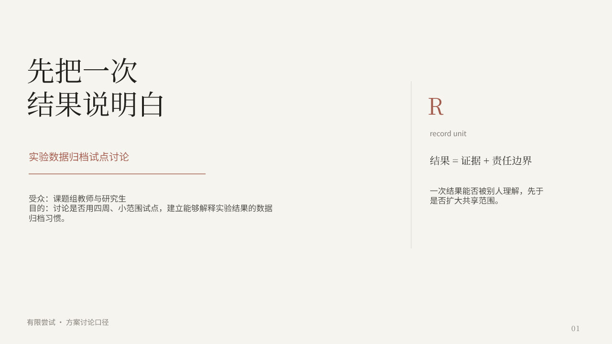
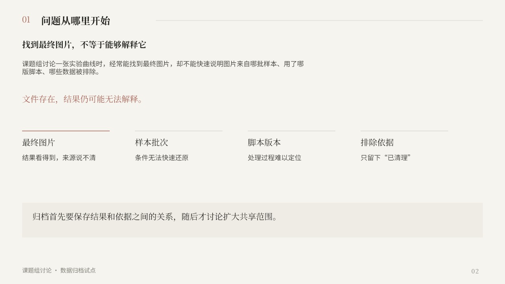
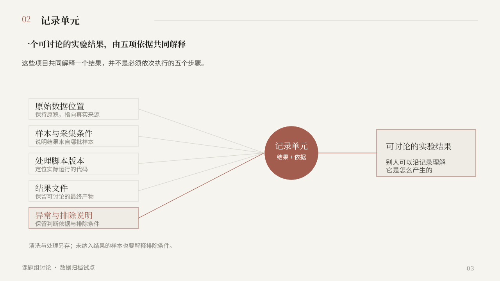
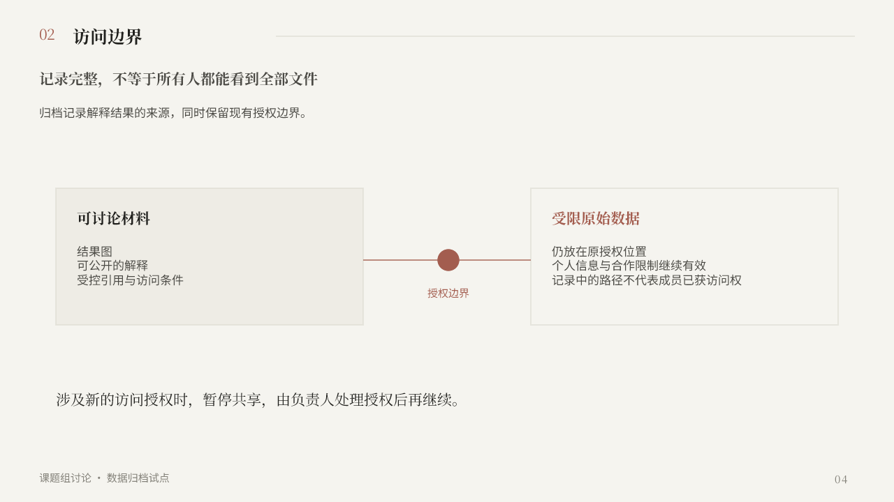
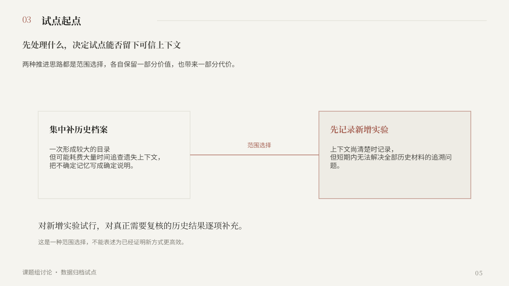
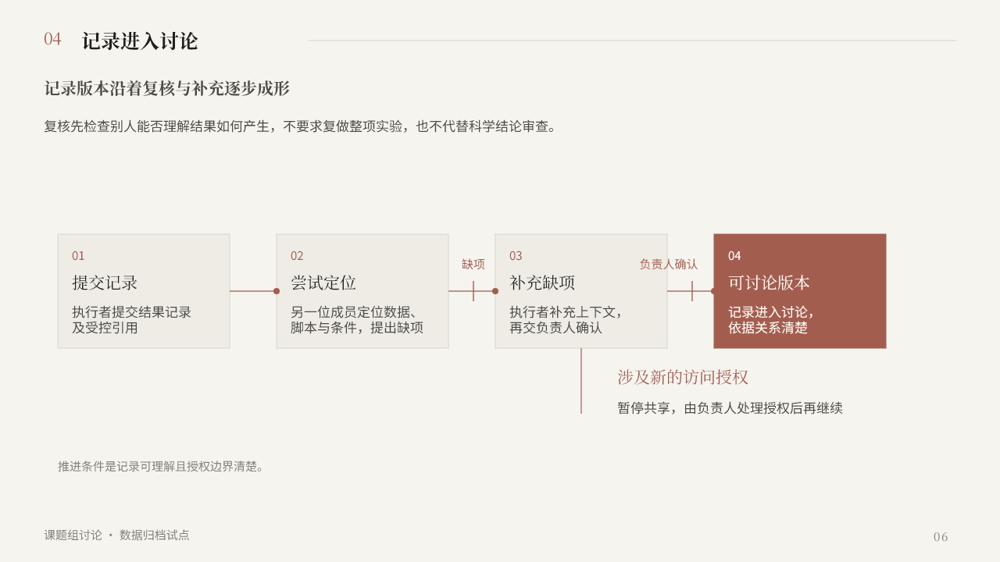
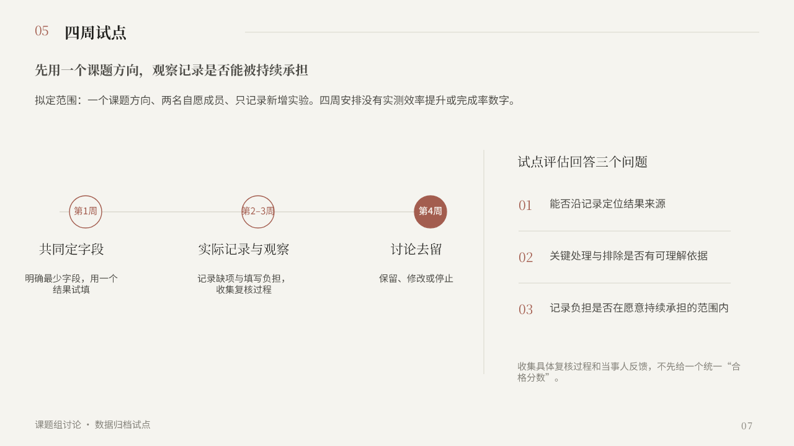
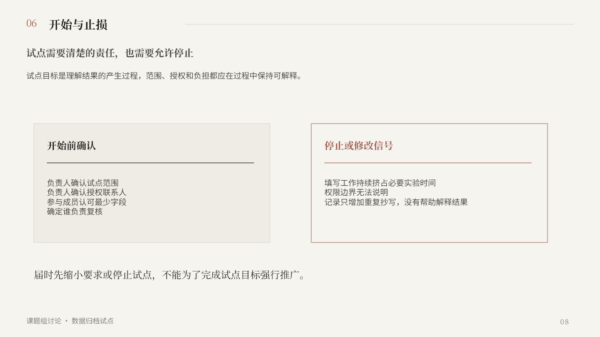
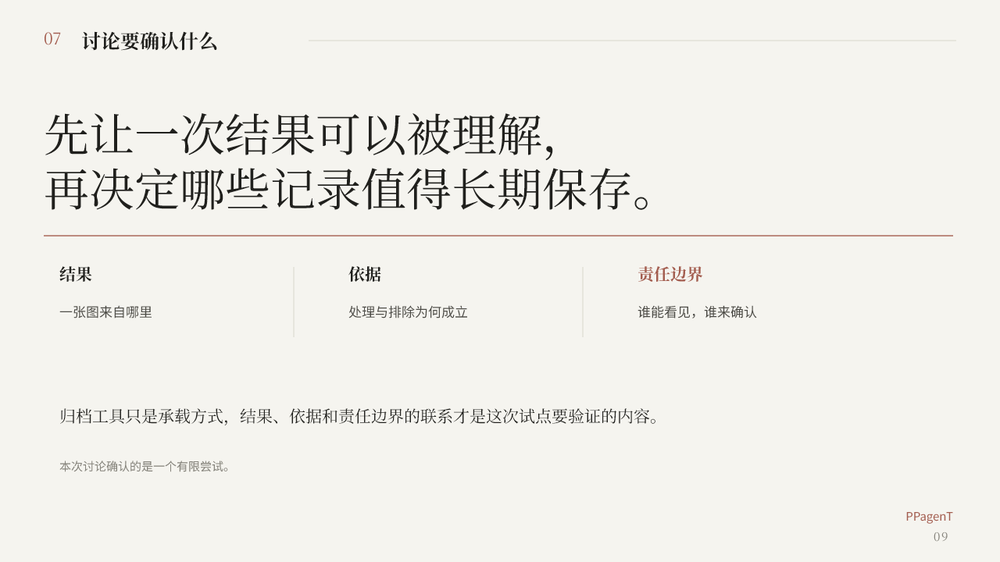

2026-09-06 用户已认可当前排版 · 冻结视觉基准。Git 标签：neutral-magazine-approved-20260906。此前父任务审查记录保留，不覆盖用户此后的审美认可；跨稿稳定性仍待验证。下载可编辑 PPTX · 历史审查记录 · 恢复方法

01 · 封面：有限尝试与记录单元

02 · 问题：找到结果不等于能够解释

03 · 记录单元：五项依据汇聚到一个结果

04 · 访问边界：解释来源并保持授权边界

05 · 试点起点：新增实验优先，历史按需补充

06 · 记录进入讨论：复核、补充、确认与授权分支

07 · 四周试点：第1周、第2–3周、第4周与评估问题

08 · 开始与止损：责任确认与停止信号

09 · 收束：结果、依据、责任边界
01 标题留白、引语与右侧记录单元形成左右重心；文字换行完整；未使用图片或装饰填充。
02 结论条与四项问题沿同一基线分组；短标签保持单行；底部承载面与正文有足够净距。
03 五条输入线均抵达记录单元真实边界；异常说明使用强调色；右侧结果框不与连线相碰。
04 两个访问域共享高度与边界线；授权节点位于实际中缝；正文没有穿越边框。
05 两种起点以同一比较轴呈现；中心只保留“范围选择”文字；推荐结论在页底说明，未把取舍伪装成已验证成效。
06 四个阶段沿水平轴推进，门禁位置分别对应“缺项”和“负责人确认”；新授权旁支从补充阶段下方引出，未与主线文字相交。
07 时间线明确第1周、第2–3周、第4周；右侧三个评估问题按同一列对齐；没有填写“合格分数”结论。
08 开始与停止两栏高度一致；停止信号保留原稿三项条件；页底动作限制与面板保持分组间距。
09 收束页的大号结论在横线前结束；三项核心概念按共同基线排列；工具的承载角色与试点验证内容分开。
执行者报告程序检查 passed；父任务独立渲染9/9页成功。此类检查没有捕获全部可见问题，不能当作完整美观或语义验收。PPTX实际含220个原生shape/text、0图片，线条为普通line shape。